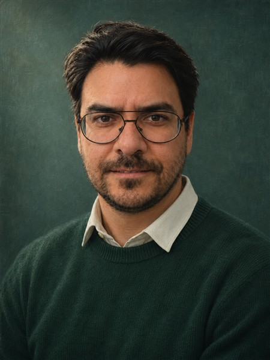

Timothy Trujillo
Visiting Associate Professor of Mathematics
Sam Houston State University
My research is in Ramsey theory, topological Ramsey spaces, ultrafilters, nonstandard models of arithmetic, mathematical logic, and foundations of mathematics. Much of my work studies how large combinatorial and logical structures can be organized, classified, and understood through the behavior of ultrafilters and related Ramsey-theoretic objects.
Mathematics
My initial mathematical training was in analysis and topology, and my doctoral work led me into topological Ramsey spaces, associated ultrafilters, Tukey theory, and Dedekind cuts of nonstandard models of arithmetic. I remain interested in the way combinatorial structure, logical form, and infinite objects interact.
Current Work
My four recent submitted manuscripts concern polynomial trigonometry, Dedekind cuts of selective ultrafilters, triangle-free modal graph theory, and a proof-search presentation of Yablo's paradox. Three grew out of collaborations with undergraduate students. Recent manuscripts.
I will give two talks at the Joint Mathematics Meetings in Chicago on January 14, 2027: Area and Addition Formulas in Polynomial Trigonometry and Dedekind Cuts Associated with Selective Ultrafilters.
Teaching
I have taught across the undergraduate and graduate mathematics curriculum. My teaching is connected to the same general concern that shapes my research: mathematical ideas need structure, language, and public reasons. Students should learn not only to reach correct answers, but to explain why the steps are valid in a form that someone else can read, check, and build on.
In 2026, I was nominated for the COSET Faculty Excellence in Teaching Award at Sam Houston State University. My teaching includes course design, undergraduate research, graduate logic, and independent studies. Teaching and mentoring.
Background
I received my B.S. in mathematics from New Mexico Tech, my M.S. in mathematics from New Mexico Tech, and my Ph.D. in mathematics from the University of Denver. Before joining Sam Houston State University in 2017, I taught at New Mexico Tech, the University of Denver, Texas State University, and the Colorado School of Mines.
I am based in Denver, Colorado, and am a Visiting Associate Professor of Mathematics at Sam Houston State University, effective September 1, 2026, working on research projects in mathematical logic and set theory, particularly Ramsey theory, ultrafilters, and nonstandard models of arithmetic. Previously, I served as a tenured Associate Professor of Mathematics at SHSU through August 31, 2026.